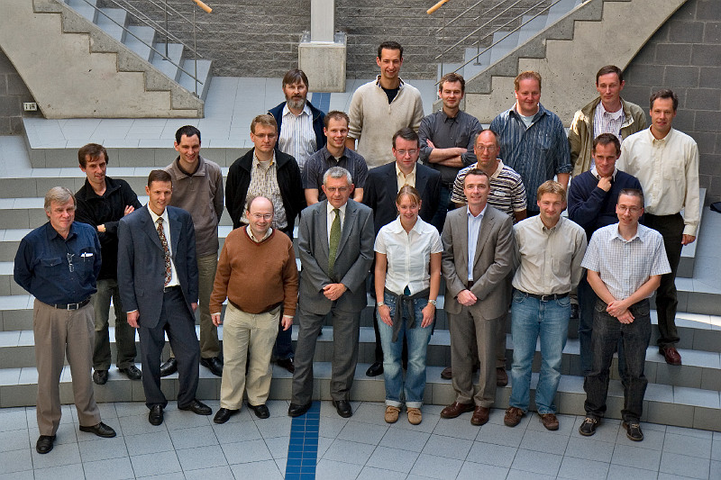

Jan Paredaens with 20 of his scientific descendants.
From left to right: Front row: Paul De Bra; Stijn Vansummeren;
Floris Geerts; Bart Goethals; Chris Tuijn; Jan Van den Bussche.
Middle row: Bart Kuijpers; Stijn Dekeyser; Jan Hidders; Philippe
Michiels; Marc Andries; Marc Gemis; Jef Wijsen.
Front row: Hans Janssens; Peter Peelman; Marc
Gyssens; Jan Paredaens; Nele Dexters; Geert Jan Houben; Toon
Calders; Frank Neven.
